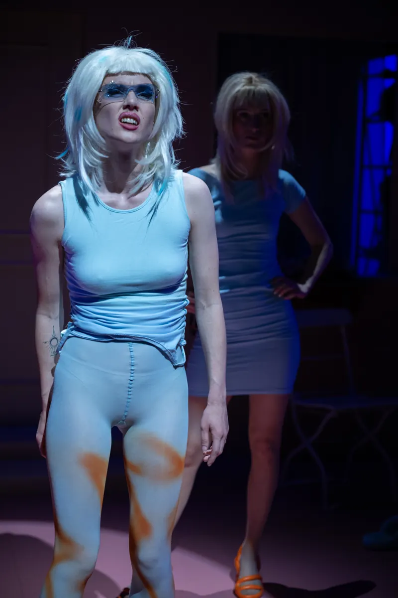
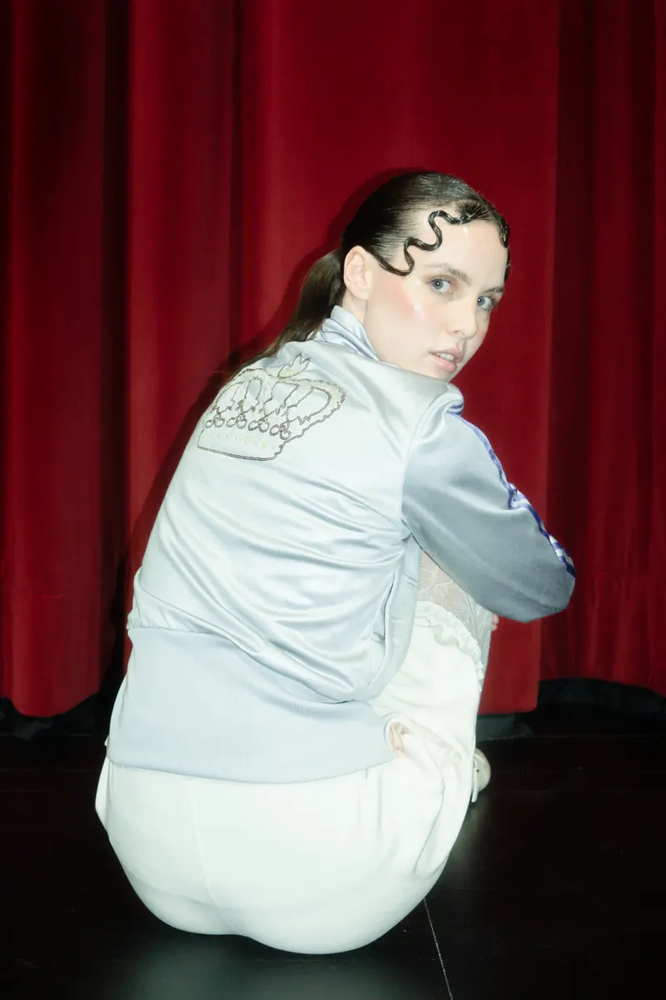
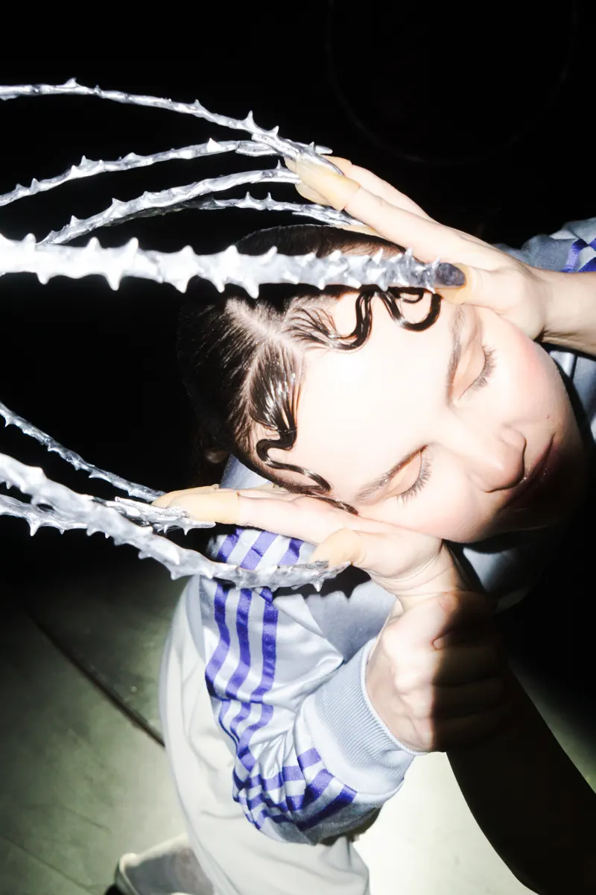

TheaterTheatre
TheaterTheatre



2026 / 15 Minutes of Fame
GastGuest
RegieDir. Emma Scharff
Schauspiel Stuttgart4 Fotos4 photos · Foto: Björn KleinPhoto: Björn Klein
2026 / Was das Nashorn sah, als es auf die andere Seite des Zauns schaute
GastGuest
Jens Raschke · RegieDir. Oda Zuschneid
Staatstheater Regensburg, Jugendtheater2025–2026 / Emil und die Detektive
RegieDir. Kristo Šagor · 52 Vorstellungen52 performances
Ludwigsburger Theatersommer2025 / Performance zu „100 Jahre Sammlung, 20 Jahre Kunstmuseum“
Kunstmuseum Stuttgart




2024 / You Can't Do It
Elvira
RegieDir. Yana Eva Thönnes
ADK Baden-Württemberg4 Fotos4 photos · Foto: BahriyePhoto: Bahriye
Theater-ShowreelTheatre showreel
Hörspiel und StimmeRadio drama and voice
- 2026SWR-HörspielworkshopSWR radio drama workshopIraRegieDir. Martin Buntz
ADK Baden-Württemberg
Hörprobe Alina ThiemannVoice sample Alina Thiemann3:09 Min.
Daten von Filmmakers, Stand 14. November 2026.Data from Filmmakers, as of 14 November 2026. Profil auf FilmmakersProfile on Filmmakers · Vita als PDFCV as PDF